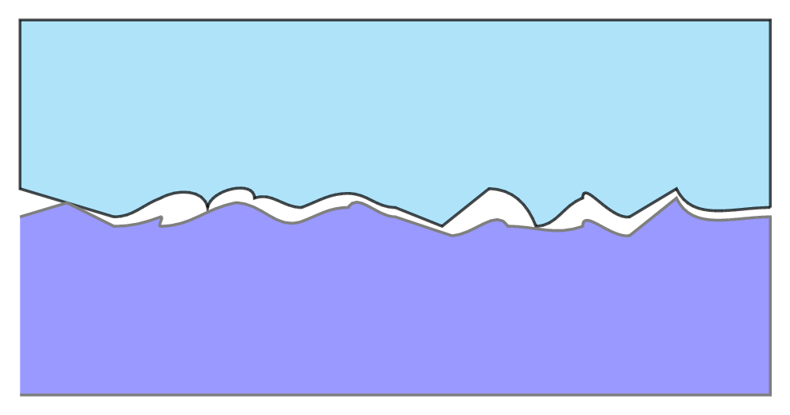
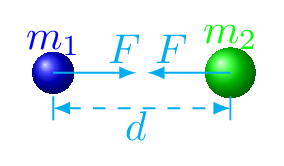

Force is a push or pull. It is a vector quantity. Force is anything that produces a change in the state of motion or shape of an object. Action of force on an object can change the direction of motion or change the velocity of the object. Newton (\(N\)) is an SI unit of force. There are four fundamental forces in nature. They are
Gravitational force or Force of Gravity: The gravitational force exists due to the mass of an object. Gravitational force is the weakest known forces in nature. It is a long range force. It holds all the planets together. We discuss this force later in this section. This force is acting on any object due to attraction of earth. Near the surface of the earth force of gravity is given by its weight, i.e., Foece, \(F\) = weight = \(mg\text{.}\) Where g is the acceleration due to gravity and the direction force is acting along the center of the earth. Weight: It is the force acting on an object due to gravitational acceleration. Weight is the effect of force of gravity on an object located at a particular point. One kg of mass has a weight of about 10 N (\(F = 1 kg\times 9.8 m/s^2 \approx 10N\)).
Electromagnetic force: The electromagnetic force exists due to the charge in the object. It is also a long range force but stronger than the gravitational force. It holds all the atoms and molecules together. We discuss this force later in another chapter.
Strong nucleur force: The strong nucleur force is a short range force and it exists only inside the nucleus. It binds all the nucleons together to have atomic existance. It is the strongest force in nature.
Weak nuclear force: The weak nucleur force is also short range force and only exists inside the nucleus. It is weaker than strong nuclear force and electromagnetic force. It is responsible for radioactivity of nucleous. The improper ratio of nucleons may cause the weak nuclear force to exist.
Physical contact of the object is not necessary to experience the fundamental forces. Hoverever, there are many other forces which only act on the object if they are in contact. They are called contact forces (or mechanical forces). Frictional force, normal force, tension, drag force, applied force, etc. are some contact forces.
Subsection2.2.1Contact Forces
Friction: Friction is a resistive force that opposes or tends to oppose relative motion between two objects. It is a force that exists between the surfaces of contact of the two objects. If two systems are in contact and stationary relative to each other, then the friction between them is called static friction. This force arises from mechanical interlocking at the microscopic level plus the electrostatic molecular forces that hold the surfaces themselves together. If two systems are in contact and moving relative to one another, then the friction between them is called kinetic friction. This force arises from forming and breaking of microscopic adhesive bonds between atoms on the surfaces plus some mechanical linkage between the small irregularities on the surfaces. Experimentally it is found that frictional force is proportional to normal force, i.e.,
\begin{equation*}
f \propto N \text{.}
\end{equation*}
or,
\begin{equation}
f = \mu N\tag{2.2.1}
\end{equation}
Where proportionality constant \(\mu\) is called the coefficient of friction. It defines the nature of roughness of the surfaces of contact. Friction decreases with increase in smoothness of the surfaces of contact, but if the surfaces are ultra smooth then friction increases because of inter molecular forces starts to act between the two surfaces as they come very close to each other, due to which it becomes harder to make them slide on each other. Friction is a complex force, and its behavior is still not completely understood. On molecular level friction has no existence.
In microscopic level most surfaces look very rough as shown in figure Figure 2.2.1. Thus, when an object is pushed to move, it must glideover these humppy, bumppy, and ditch types interlock to skip the tips of the surface. A considerable force can be resisted by friction with no apparent motion. Part of the friction is due to adhesive forces between the surface molecules of the two objects, which explains the dependence of friction on the nature of the substances. For example, rubber-soled shoes slip less than those with leather soles. Adhesion varies with substances in contact. Once an object is moving, there are fewer points of contact so less force is required to keep the object moving. At small but nonzero speeds, friction is nearly independent of speed.

Figure2.2.1.Surfaces of contact as seen from microscope
In real life frictional forces are almost always present. Remember the direction of frictional force is always opposite to the direction of motion or the applied force. Friction is bad as it dissipates energy but friction is also good as it allows us to roll, turn, walk, and stop. Friction between two solids does not depend on the surface area in contact. Friction can happen, even between surfaces that are not solid such as air drag. Air resistance (drag) during free fall reduces the weight of the object. Air drag (resistance) increases with the velocity of the object in free fall and when it becomes equal to the wight of the object, net force acting on the object is zero and hence the object starts falling with the constant velocity called Terminal Velocity. Skydiving is a good example of terminal velocity.
Normal: This is a force of reaction from the surface where the object is placed. It is always perpendicular to the surface of contact. Tension: is a pulling force. It is a force acting between two objects on opposite ends of the string and acting along the directions to taut string at the point of contact. This force stretches the string along fixed support. Spring force: A spring is a special medium that has ability to restore its shape, if deformed. The elastic property in a material has the ability to restore its shape, if an applied deforming force has been released. From Hook’s law a material (spring) exerts a restoring force that is proportional to a deforming force in opposite direction in which it is stretched or compressed. In mathematical form, spring force,
\begin{equation}
F=-kx\tag{2.2.2}
\end{equation}
where \(k\) is a spring’s stiffness, also called an elastic constant and \(x\) is stretch made on spring.
Subsection2.2.2Newton’s Laws of Motion
Newton recognized that there are two kinds of motion, uniform motion and accelerated motion. Uniform motion: the movement of an object traveling in a straight line at a constant speed (no acceleration). Accelerated motion: the movement of an object traveling under the influence of some source of acceleration. On that basis he defined three laws of motion called Newton’s laws of motion.
Newton’s first law is the definition of a force which states that every object in a state of rest remains at rest or in a state of uniform motion tends to remain in uniform motion along the same direction, unless an external force is applied to it. Force is not required to continue the motion of anything which is already in motion. The first law is also called a law of inertia. Inertia is an ability of an object to resist any changes in its motion. Mass is related to inertia, the bigger the mass the more difficult it is to change the state of rest or motion of an object. Mass: It is the amount of matter contained in an object. It is also reposible for the force of gravity of the object.
Some examples of I law: 1. When the bus driver abruptly applies the breaks, passengers tend to feel a momentary pull in the forward direction. The reason behind this jerk felt by the passengers sitting inside the bus is the law of inertia. Due to inertia, our upper body part continues to maintain a state of motion even after the bus stops, thereby pushing us in the forward direction. 2. A book kept on a bookshelf does not change its shape, size, or position until acted upon by an external force. 3. A runner is not able to stop himself right after crossing the finish line. He/She tends to take time and cover a few meters of distance running beyond the finish line. This is because the inertia of motion resists a sudden termination of motion and compels the body to maintain its state of motion.
Newton’s second law is the measurement of a force which states that the acceleration of the object is directly proportional to the applied force and takes the direction of that force. Newton’s II law can be expressed as
Newton’s third law is the property of force which states that for every action there is an equal and opposite reaction. Force always comes in pair. If an object A applies the action force on the object B then object B also applies the same amount of reaction force on the object A. These forces pair always act on two different objects. If one object exerts a force on a second object, then the second object exerts an equal but oppositely directed force on the first object. Mathematically,
Some examples: 1. Earth exerts force on you because you exert an equal and opposite force on earth. Here your force is your body weight and earth reaction force is a normal force. 2. When the rifle is fired it exerts a force on the bullet and the bullet exerts an equal and opposite force on the rifle. 3. You are able to sweem in water because you pushes water backwardly so apply the force on water and in reaction water also applies the same force on you just in opposite direction so you can sweem nicely.
Subsection2.2.3Momentum
It is the quantity of motion contained in a body. If a body of mass \(m\) is moving with a velocity \(v\) then its momentum \(p =mv\text{.}\) Momentum (also called linear Momentum) is a product of mass and velocity of the object. Momentum is represented by \(p\text{,}\) its SI unit is \(kgm/s\text{.}\) Momentum is a vector quantity and its direction is along the velocity of the object. From Newton’s II law:
\begin{align*}
F \amp =ma = m\left(\frac{v_f-v_i}{t}\right)\\
F \amp =\frac{m\Delta v}{t}
\end{align*}
\begin{equation}
\therefore Ft = \Delta mv\tag{2.2.5}
\end{equation}
Here \(Ft=I\) is called impulse and \(\Delta mv\) is called change in momentum. They are two different physical quantities but their magnitude remains the same. A force acting on an object for a certain time changes the momentum of that object, such change in momentum is called the Impulse. Impulse is a vector quantity and has the same direction as the average force. SI unit of impulse is \(Ns\text{.}\)
Example2.2.2.
A 300 kg horse running with 40 m/s has a momentum of \(p=300\times 40 = 12000 kgm/s.\)
Example2.2.3.
When a 430 g soccer ball is kicked, the impact lasts for 0.04 s. Find the magnitude of force that is needed to fly off the ball at 8 m/s.
\begin{align*}
Ft \amp= \Delta mv\\
or, Ft \amp= m (v_f-v_i)\\
or, F\times 0.04 s \amp= 0.43 kg (8 m/s-0)\\
\therefore F\amp= 86 N
\end{align*}
Subsection2.2.4Uniform Circular Motion
In uniform circular motion object is moving at a constant speed (not velocity) on a circular path. For an object to be in uniform circular motion, there must be a net force acting on it. This force is called a centripetal force without this force nothing can move in a circular path. This net force is not a physical force of some kind rather some other forces must be there to act like a centripetel force. If the centripetal force , becomes zero suddenly, then the object flies off along a tangent to the circle. The centripetal force,
where \(m\) is mass of the object, \(v\) is speed of the object, and \(r\) is radius of the circluar path. Because of necessary centripetal force, sometime we feel difficulty to steer our car around a sharp curve. The sharper the curve (i.e., the smaller the radius) the greater the centripetal force required to keep the car on the curved path. Cetripetal means to look towards the center, hence centripetal force is always acting towards the center of the path.
Some examples: 1. We may have noticed that when the string breaks for a whirling stone. The stone flies off along the straight line tangential to the circular path. 2. When swinging a yo-yo around in a circle. The force generated by your arm puts the yo-yo itself in motion, and the tension on the string keeps it moving in a circular path as you twirl it. If the string were to break at any given point, the yo-yo would fly off in a direction that is tangent to the point on the circle that the yo-yo was at when the string broke centripetal force 1 .
Subsection2.2.5Newton’s Law of Gravitation
Newton observed that when an object falls it was accelerated toward the earth. Since the cause of such acceleration is an unbalanced force, there must be a force pulling that object toward the earth. On this basis, he came up with an idea called Newton’s Law of Universal Gravitation. It states that any two masses in the universe attract each other with a force that is directly proportional to the product of the masses and inversely proportional to the square of the distance between them [Figure 2.2.4]. Mathematically,
\begin{equation}
F = G\frac{m_1\times m_2}{d^2}\tag{2.2.7}
\end{equation}
here, \(G=6.67\times 10^{-11} Nm^2/kg^2\) is an universal gravitational constant, \(m_1\) and \(m_2\) are the masses of two objects, and \(d\) is the distance between the them.

Figure2.2.4.Gravitational force between two Objects
Subsection2.2.6Escape Velocity
Escape Velocity is the minimum velocity required by an object at which if it can be thrown out of the planet then it never fall back on the planet again. If a stone of mass m is thrown out from the earth with an escape velocity \(v_e\) then it never fall back on the earth again. The escape velocity depends on the mass and radius of the massive body and is given by the formula:
\begin{equation}
v = \sqrt{\frac{2GM}{r}}\tag{2.2.8}
\end{equation}
Here, \(G\) is universal gravitational constant, \(M\) is the mass of the planet, and \(r\) is the radius of that planet. The escape velocity of earth is 11.2 km/s.